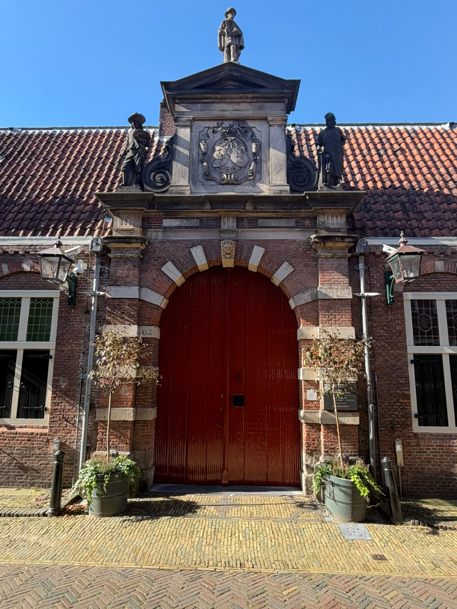
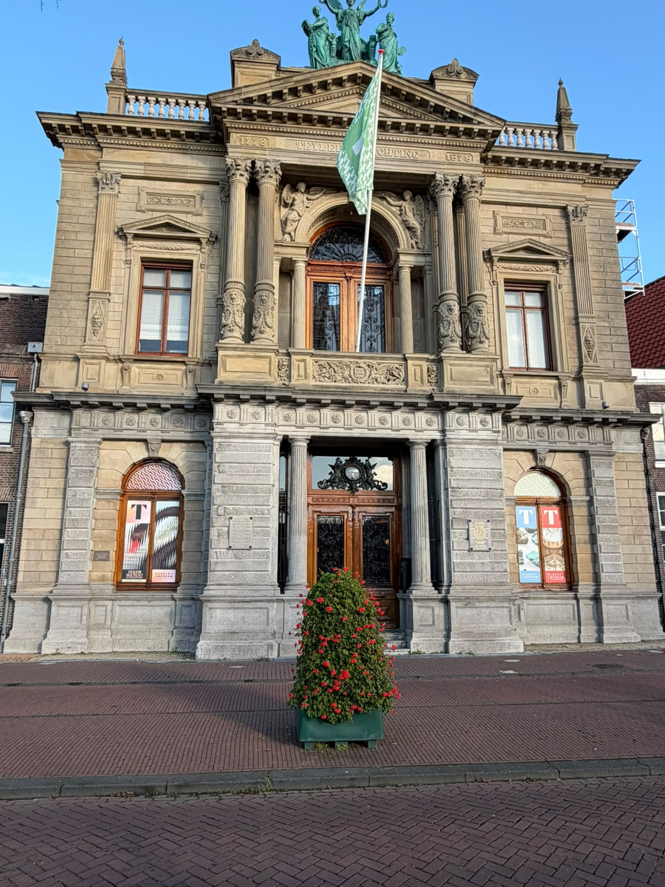
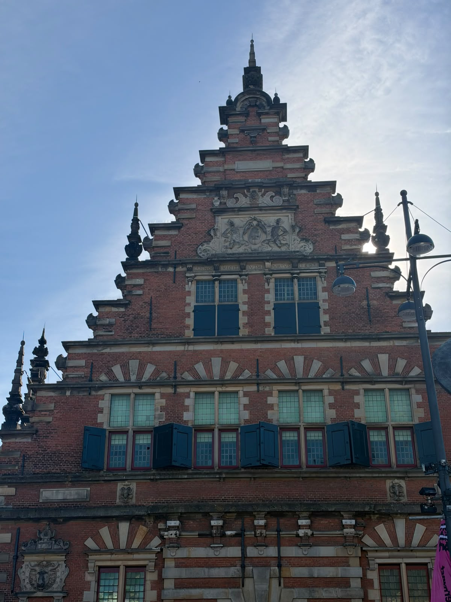

Frans Hals Museum
Dedicated to the 17th-century painter Frans Hals and other Haarlem artists. Known for lively portrait art.
Type: Art & Portraits Good to know: Allow about 1–1.5 hours for a visit.
 Groot Heiligland 62, Haarlem
Groot Heiligland 62, Haarlem

Museums

Dedicated to the 17th-century painter Frans Hals and other Haarlem artists. Known for lively portrait art.
Type: Art & Portraits Good to know: Allow about 1–1.5 hours for a visit.
Groot Heiligland 62, Haarlem

The oldest museum in the Netherlands, with old scientific instruments, fossils and art collections in a historic building.
Type: Science, Art & Natural History Good to know: The 18th-century interior is part of the experience.
Location: Spaarne 16, Haarlem

Explores the history of psychiatry and the mind in a former hospital building. Thought-provoking and unusual.
Type: Social History & Psychology Good to know: Suitable for older visitors and curious travellers.
Location: Schotersingel 2, Haarlem